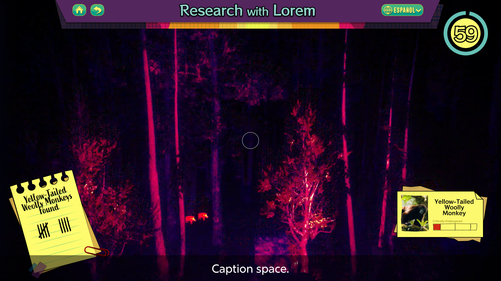
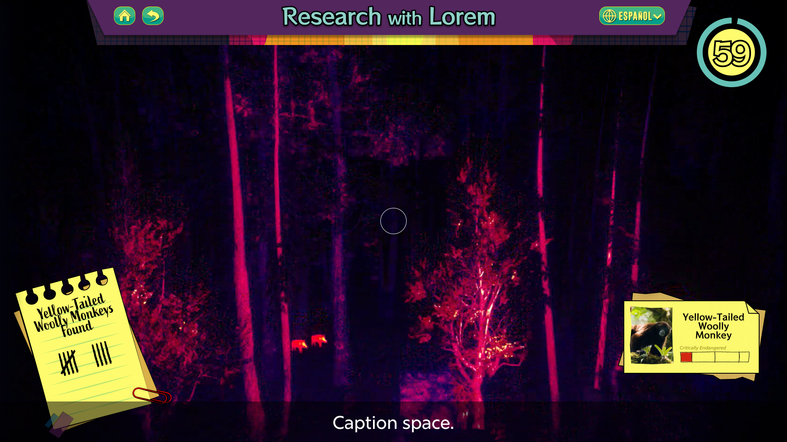

Weaving Center Interactive
UI/UX Designer | Principal Designer | Graphic Designer
I was the principal designer, graphic designer, and the UI/UX designer for the “Weaving Center” interactive in the Take Me There: Peru exhibit at The Children’s Museum of Indianapolis. I worked together with the interactive technology team to design a high fidelity comp based on the blueprint provided by the Lead Interactive Designer. First, I created a rough prototype in Figma to develop the flow of the interactive and how each screen would animate. Then, I worked together with the Lead Interactive Designer to create an intuitive user interface based on previous projects. The purpose of the interactive was to teach visitors about the process of weaving a textile in Peruvian culture, so I gathered a lot of research to influence my design process. We picked several recurring design motifs as seen in Peruvian culture and I recreated the shapes in Adobe Illustrator. These graphics were then used in the interactive to represent the shapes woven into the textile. Once the prototype was complete, the Lead Interactive Designer worked with the Developer to make final edits and turn the concept into a playable interactive as seen in the museum today.
Monkey Drone
UI/UX Designer | Graphic Designer
I was the UI/UX Designer and Graphic Designer for the “Monkey Drone” interactive in the Take Me There: Peru exhibit at The Children’s Museum of Indianapolis. This interactive includes an introduction from the researcher who studies Yellow-Tailed Woolly Monkeys, and a short minigame about using thermal cameras to detect animals in the rainforest. I designed the interface of the introduction and minigame. The minigame includes a timer icon, a count of the amount of monkeys you discover, and a notecard element of the animals you find as well as their conservation status. It was an exciting challenge to balance the elements on the screen and get to play with visual hierarchy and color. I based the UI’s color palette on the distinct, vibrant shades of a thermal camera and the bright yellow tones of a field journal. I created the UI elements in Adobe Illustrator and implemented them into a prototype using Figma.
 
